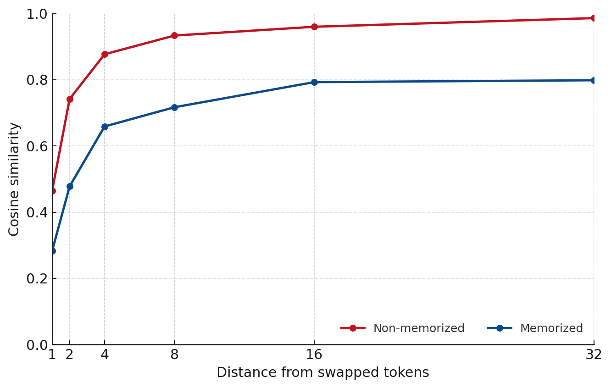

# Memorization And Token Ordering

Recent work (Prabhudesai et al., 2025) has exposed an interesting characteristic of causal transformers:

**they can be trained longer, and to lower final loss, when token ordering is not strictly adhered to.** 

This is likely due to the fact that it builds smoother interpolations over discrete tokens. In fact, expliocitely making architectural changes to enforce local smoothing of token representation (Allen-Zhu et al., 2025) showed gains doing exactly this. One reasonable interpretation of this is that token-order jittering (or smoothing) allows models to build generalizations over examples instead of memorizing them, even after seeing the same chunk of text many times. This begs the following question: 

*can we detect memorized samples solely by examining their sensitivity to token order changes?*

## Experimental Setup

To analyze the imapact of token order changes we use a very simple setup. We examine Olmo-2-1B (Team OLOm et al., 2025) and some examples from its training dataset, Dolma (Soldaini et al., 2024). More concretely, we use 100 examples that contain memorized text, and 100 examples that are randomly sampled from the corpus. These examples use 64 prefix tokens followed by 48 suffix tokens (those that are memorized when it applies).

The method is simple:
1. pass the original sequence through the
2. swap the final 2 tokens in the prefix and pass the sequence again
3. analyze changes in gradients and activations

More concretely, we consider:
1. the activations after the layer 12 feed-forward block for the first suffix token
2. the gradient of the layer 12 ffn down projection wrt suffix tokens

## Results

|| Non-memorized | Memorized |
|-------:| ------------: | --------: |
|Activation Similarity|        **0.9013** |    0.8366 |
|Gradient Similarity (all tokens)|        **0.9294** |    0.6875 |


*Table 1: Alignment between activations and gradients of sequences following token order changes. Memorized examples show far less robustness to token order swaps.* 

We find  that memorized examples exhibit drastically higher sensitivies to token order changes for both activations and gradients. Additionally, analysis of gradient norms and loss changes shows the drastic impact a single token swap has on memorized examples. While loss remains an order of magnitude lower for the memorized examples, the gradient norm exceeds the non-memorized examples.


*Figure 1: Impact of swapping final prefix tokens on loss and gradient norm of suffix tokens for memorized and non-memorized examples.*

It is also interesting to consider how representational differences are impacted by the proximity to the token order swap. If we consider next token prediction as a combination of memorization and conceptual representation, we would expect the impact of token swapping on non-memorized data to be highly local, while memorized data would suffer consequences over far longer portions of the sequence. 



*Figure 2: Cosine similarities between gradients based on distance from swapped tokens.*

We find this is exactly the case. In fact, while the token gradients for non-memorized examples approach their non-corrupted gradient counterparts as move away from the token swap, the memorized examples plateau at roughly 0.8. It seems that either memorization fundamentally corrupts conceptual representation, or that memorized examples have drastically different conceptual meanings for slightly different token orders. It is highly likely that either can be true for various examples.

## References:

[1] M. Prabhudesai, M. Wu, A. Zadeh, K. Fragkiadaki, D. Pathak, Diffusion Beats Autoregressive in Data-Constrained Settings, arXiv:2507.15857 (2025).

[2] Z. Allen-Zhu, Physics of Language Models: Part 4.1, Architecture Design and the Magic of Canon Layers, SSRN: 5240330 (2025).

[3] Team OLMo, P. Walsh, L. Soldaini, D. Groeneveld, K. Lo, N. A. Smith, H. Hajishirzi, et al., 2 OLMo 2 Furious, arXiv:2501.00656 (2025).

[4] L. Soldaini et al., Dolma: an Open Corpus of Three Trillion Tokens for Language Model Pretraining Research, arXiv:2402.00159 (2024).
